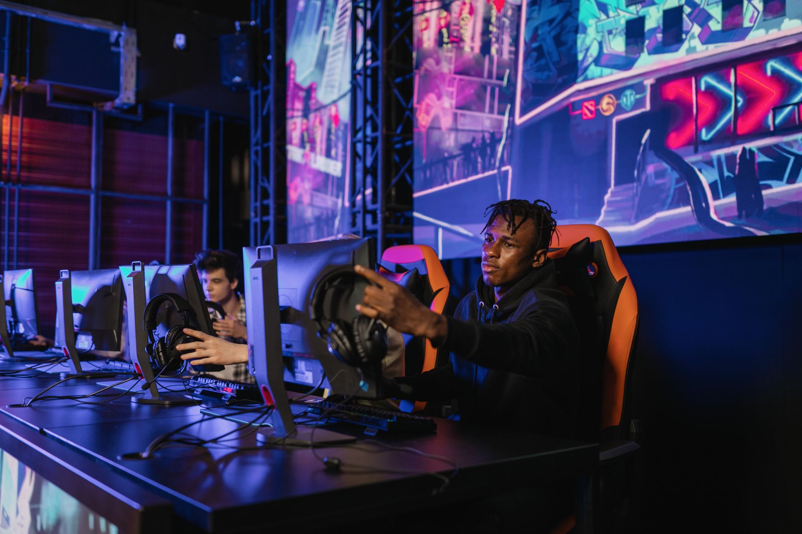

The excitement builds for PGL Masters Bucharest
The esports world is turning its eyes toward Romania as the PGL Masters Bucharest approaches. This tournament represents a critical juncture in the current Counter-Strike 2 season, offering teams a chance to solidify their rankings and prove their dominance on the international stage. With the transition to CS2 bringing new tactical layers to the game, every match in Bucharest carries extra weight for analysts and fans alike.
The tournament structure is designed to test the depth of every roster. Unlike smaller regional events, the PGL Masters brings together a diverse array of playing styles, ranging from highly aggressive entry-fragging teams to disciplined, tactical defensive units. This variety ensures that no two matches will feel the same, keeping the audience on the edge of their seats from the very first map.
As we look at the preliminary stages, the tension in the arena is already palpable. Teams have been grinding in practice rooms for weeks, refining their utility usage and perfecting their site executes. The goal is not just to win individual maps, but to establish a psychological advantage that can carry them through the grueling bracket stages.
Analyzing the opening matchups
The opening matchups have been officially set, and they promise to deliver immediate high-octane gameplay. The brackets reveal a mix of seasoned veterans looking to reclaim their glory and hungry newcomers looking to disrupt the established order. These initial series are crucial because they often dictate the momentum a team carries into the playoffs.
Key storylines to watch during the opening round include:
One particular matchup stands out due to the recent form of the participating teams. While some teams are entering the tournament on a winning streak, others are looking for redemption after a disappointing showing in previous months. This volatility makes the opening day of PGL Masters Bucharest one of the most unpredictable periods of the tournament.
The importance of tactical depth in CS2
Success in modern Counter-Strike 2 requires more than just raw mechanical skill. While aim is undoubtedly important, the strategic deployment of smoke grenades, flashes, and molotovs has become more complex with the new volumetric smoke mechanics. Teams that can master these nuances will have a significant advantage during the PGL Masters matches.
In the current era of CS2, a single well-placed smoke can change the entire flow of a round, making tactical discipline just as important as individual aim.
Coaches and analysts will be watching closely to see how teams adapt to mid-round calls. When an initial plan fails, the ability to pivot and find a new opening is what separates the champions from the runners-up. The Bucharest stage will provide a perfect laboratory to observe these high-level decision-making processes in real-time.
Factors that determine tournament success
Beyond the tactical side, the mental fortitude of the players plays a massive role. The pressure of a live crowd and the weight of expectations can cause even the best players to falter. Maintaining focus during long series and recovering from lost rounds is essential for any team hoping to lift the trophy in Bucharest.
Several factors contribute to a team's ability to stay composed:
Teams that have mastered the art of psychological recovery often find themselves deep in the tournament brackets. They don't let a single mistake snowball into a full-blown crisis, which is a vital skill when facing the world's best competition.
Looking ahead to the championship
As the opening matchups conclude, the tournament will quickly narrow down to the elite few. The path to the Grand Finals in Bucharest is paved with intense competition and razor-thin margins. Every victory brings a team closer to prestige, but every loss can be a devastating blow to their season ambitions.
For fans, the journey through the PGL Masters Bucharest will be a rollercoaster of emotions. From the shock of early upsets to the awe of incredible individual plays, there is something for everyone in this tournament. We will be following every update, result, and highlight as the event unfolds.
If you are interested in the psychological aspects of high-level play, you should read our detailed arT on Overcoming Momentum Loss in Pro CS2 Competition at https://dhyey.bond/blog/art-on-overcoming-momentum-loss-in-pro-cs2-competition/. Understanding how pros handle setbacks can give you a deeper appreciation for the matches you see in Bucharest.
See Also
If you enjoyed this Esports News article, check out arT on Overcoming Momentum Loss in Pro CS2 Competition for more useful reading.